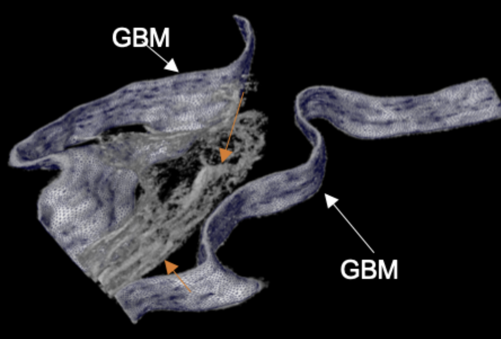
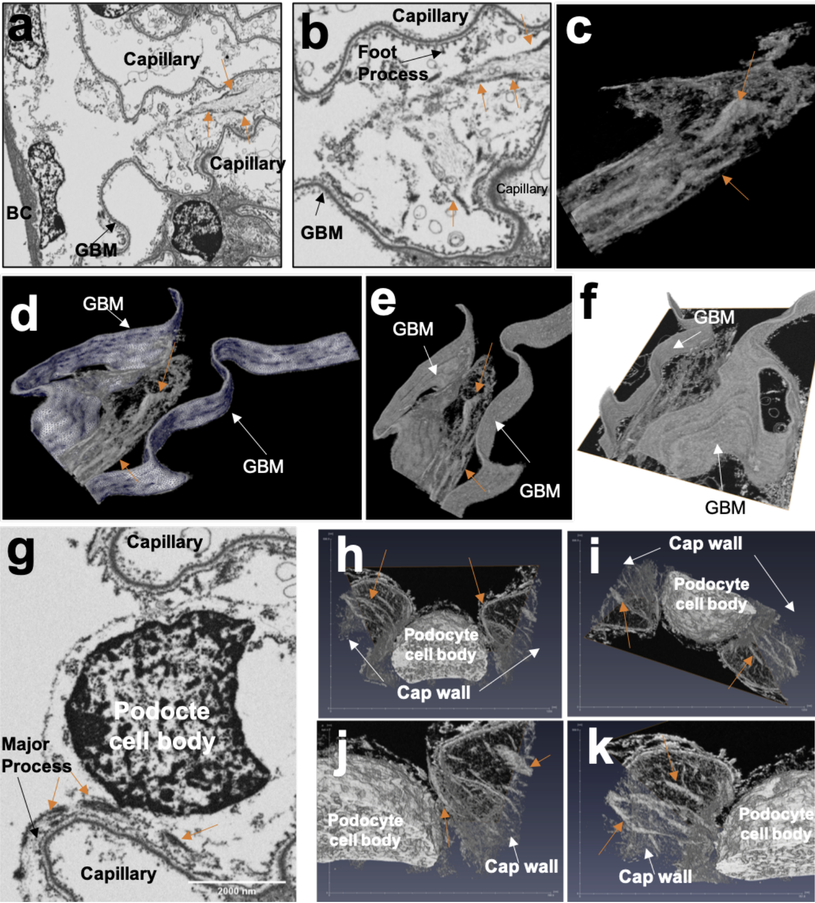
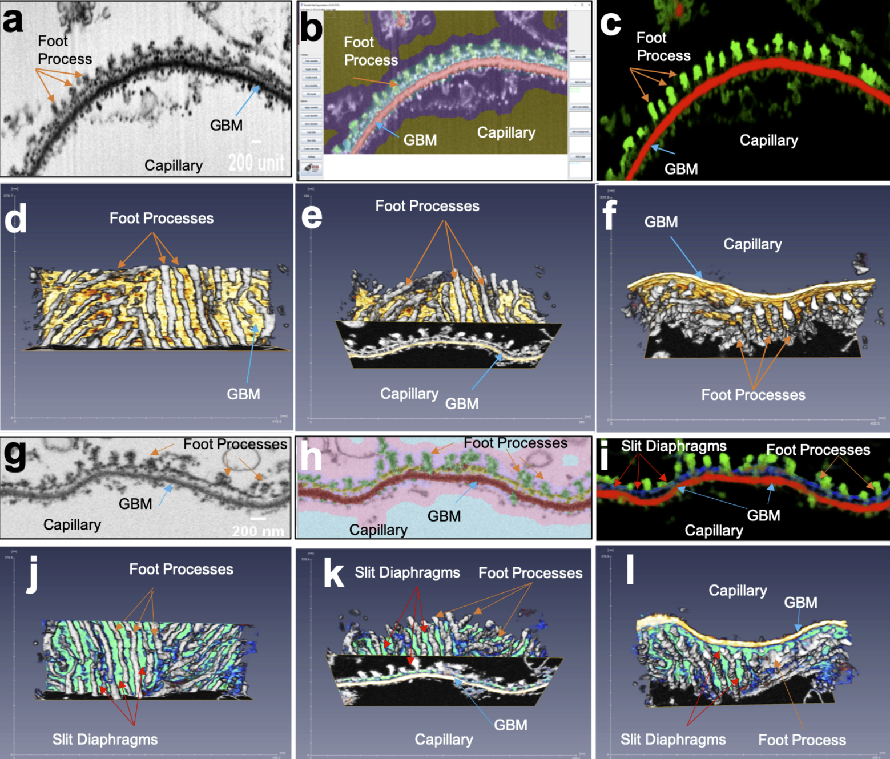

Podocyte Visualization
Published research analyzing the structure of kidney cells

Overview
I worked in a nephrology lab to study the impact of disease on the glomerular basement membrane, a complicated structure in our kidneys. I used 3D visualization software, Python, and DNA sequencing techniques to create visualizations of these structures to better understand their failure mode.
Publication
Qu C, Roth R, Puapatanakul P, Loitman C, Hammad D, Genin GM, Miner JH, Suleiman HY. "Three-Dimensional Visualization of the Podocyte Actin Network Using Integrated Membrane Extraction, Electron Microscopy, and Machine Learning." J Am Soc Nephrol. 2022 Jan;33(1):155-173.
Background
Many kidney diseases disrupt the glomerular basement membrane, leading to proteinuria and other complications. The structure of these cells was little studied due to the complications of visualization. To develop the first 3D visualization of this structure, I joined a lab that used Scanning Electron Microscopy to snap an image of each cell. The electron microscope would then laser off a small layer of the sample and conduct another scan until we had thousands of images with which to construct a 3D model.
My Contributions
I analyzed thousands of these images, manually identifying interesting segments before using Python and Amira 3D visualization software to highlight structures. Over the course of a little over a year, I made many images that were used in a published paper. Beyond conducting this image generation, I helped conduct DNA sequencing to better understand the macrostructure changes in cell type.



Skills & Technologies
- Python
- Amira 3D Visualization
- Electron Microscopy
- DNA Sequencing
- Published Research